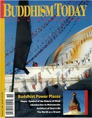

You can order this issue from the Diamond Way USA Dharma Shop.
Number 9 — 2001
Buddhist Power Places
A Change of Expression, Part 2
Kunzig Shamar Rinpoche
Bardo Teachings, Part 2
Lopon Tsechu Rinpoche
The World as a Dream
Gendyn Rinpoche
Introduction to Mahamudra
Lama Ole Nydahl
Architect of One's Life, Part 2
Jigme Ripoche
The Life of Gampopa, Part 2
Paul Waibl
Stupa - Symbol of the Nature of Mind
Manfred Seegers
Mount Kailash
Karma Tensing Senghe
Buddhist Power Places Around Kathmandu
Manfred Ingerfeld & Andreas Brau
Book Reviews
Joe Manuse & Kevin Rooney